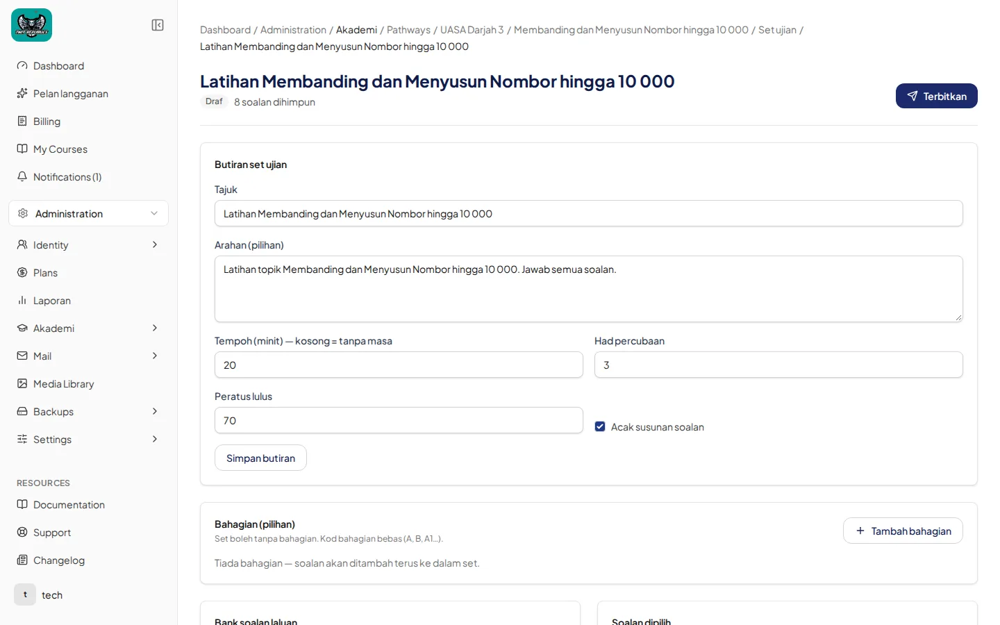

Set ujian pada pelajaran (laluan) & pandangan pelajar
Panduan 3a — feature pathway_exam_sets. Ini bukan ExamBuilder bahan guru. Untuk MCQ / Subjektif / Pemahaman / Esei pada bahan, lihat Panduan 3b.
Contoh utama: pelajaran Nilai Tempat Ribu, Ratus, Puluh dan Sa (UASA Darjah 3) → set Latihan Nilai Tempat Ribu, Ratus, Puluh dan Sa (8 soalan, 20 minit, diterbitkan). UPKK: latihan topik + bab Set Kuiz (contoh Set Kuiz 1, 40 minit) — data sebenar.
Bahasa Melayu
1. Senarai Set ujian (admin / guru)
- Dari pelajaran laluan, buka Set ujian.
- Tajuk halaman Set ujian. Butang + Tambah set ujian.
- Bundel pelajaran (badge Aktif) dan Bahan pelajaran (muat naik PDF/video) mungkin kelihatan di atas senarai.
- Jadual: TAJUK, STATUS (Diterbitkan), SOALAN, MASA.

2. Set diterbitkan (dikunci)
- Buka set. Status hijau Diterbitkan, teks cth. 8 soalan dihimpun.
- Banner kunci: Set ujian telah diterbitkan — “Kandungan dikunci. Tekan Jadikan draf di atas untuk menyunting semula.”

3. Sunting tetapan (hanya jika tiada percubaan pelajar)
- Set yang diterbitkan dikunci. Tekan Jadikan draf hanya jika tiada percubaan pelajar pada set itu. Jika pelajar sudah menjawab, jangan anggap anda boleh membuka draf untuk sunting struktur.
- Dalam status Draf, sunting Butiran set ujian: Tajuk, Arahan (pilihan), Tempoh (minit) — kosong = tanpa masa, Had percubaan, Peratus lulus, kotak Acak susunan soalan.
- Klik Simpan butiran.
- Bahagian (pilihan): + Tambah bahagian — kod/tajuk bebas (bukan jenis MCQ/Subjektif/Pemahaman/Esei seperti ExamBuilder 3b). Pilih soalan dari Bank soalan laluan.
- Apabila siap: Terbitkan.

Jadikan draf untuk sunting hanya dibenarkan apabila tiada percubaan pelajar. Jangan implikasikan draf boleh dibuka selepas pelajar sudah menjawab.
4. Pandangan pelajar
- Menu pelajar: Simulasi peperiksaan — “Ujian bermasa yang dibuka oleh pelan langganan anda.”
- Kad set (cth. Kertas Model 1 · UASA Darjah 3 · 40 soalan · 60 min) → Buka. Nota: kertas dengan nama sama (cth. Kertas Model 1) mungkin milik subjek berbeza.
- Halaman pendaratan set: Mula set ujian — Soalan, Masa, Markah lulus, Baki percubaan; butang Mula ujian (“Pemasa bermula sebaik sahaja anda menekan Mula ujian.”). Sejarah Percubaan lepas.


English
Guide 3a — feature pathway_exam_sets. This is not the teacher-material ExamBuilder. For MCQ / Subjective / Comprehension / Essay on materials, see Guide 3b.
Primary example: lesson Nilai Tempat Ribu, Ratus, Puluh dan Sa (UASA Darjah 3) → set Latihan Nilai Tempat Ribu, Ratus, Puluh dan Sa (8 questions, 20 minutes, published). UPKK: topic drills + Set Kuiz chapters (e.g. Set Kuiz 1, 40 minutes) — real data.
1. Exam-set list (admin / teacher)
- From a pathway lesson, open Set ujian.
- Page title Set ujian. Button + Tambah set ujian.
- Bundel pelajaran (badge Aktif) and Bahan pelajaran (PDF/video upload) may appear above the list.
- Table columns: TAJUK, STATUS (Diterbitkan), SOALAN, MASA. See Figure 1.
2. Published set (locked)
- Open the set. Green status Diterbitkan, e.g. 8 soalan dihimpun.
- Lock banner: Set ujian telah diterbitkan — “Content locked. Press Jadikan draf above to edit again.” See Figure 2.
3. Edit settings (only if there are no student attempts)
- A published set is locked. Press Jadikan draf only when no student attempts exist on that set. If students have already answered, do not assume you can open a draft to edit structure.
- In Draf status, edit Butiran set ujian: Tajuk, Arahan (optional), Tempoh (minit) — empty = no time limit, Had percubaan, Peratus lulus, Acak susunan soalan checkbox.
- Click Simpan butiran.
- Optional sections: + Tambah bahagian — free code/title (not MCQ/Subjective/Comprehension/Essay section kinds from ExamBuilder 3b). Pick questions from Bank soalan laluan.
- When ready: Terbitkan. See Figure 3 and Figure 4.
Jadikan draf for editing is allowed only when there are no student attempts. Do not imply drafts are available after students have answered.
4. Student view
- Student menu: Simulasi peperiksaan — timed exams opened by the subscription plan.
- Set card (e.g. Kertas Model 1 · UASA Darjah 3 · 40 questions · 60 min) → Buka. Note: papers with the same name (e.g. Kertas Model 1) may belong to different subjects.
- Landing page: Mula set ujian — Questions, Time, Pass mark, Remaining attempts; Mula ujian button (“Timer starts as soon as you press Start”). History under Percubaan lepas. See Figure 5 and Figure 6.